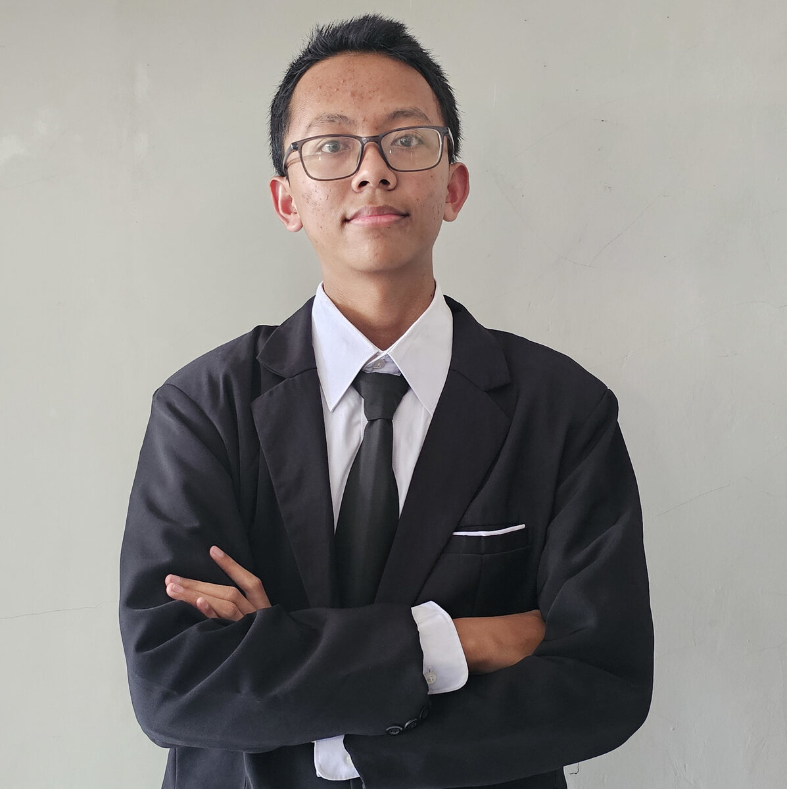

Naf'an Rizkilah — pengembang perangkat lunak
Sistem untuk keseharian. Dunia untuk dimainkan.
Sejak 2022 saya membangun aplikasi web, game, desktop, Android, dan REST API. Sebagian besar untuk pekerjaan yang harus selesai dan dipakai orang.
Karya pilihan
Semua karya
Tentang saya
Saya Naf'an Rizkilah, pengembang perangkat lunak asal Indonesia. Sejak 2022 saya membangun aplikasi web, game, aplikasi desktop, aplikasi Android, dan REST API.
Sebagian besar pekerjaan saya berangkat dari masalah operasional sehari-hari: manajemen laundry, parkir, restoran, klinik, hotel, sampai tagihan air PDAM. Di sisi lain, saya juga membuat game dan aset visualnya.
Fokus saya saat ini adalah .NET dan Jetpack Compose. Saya senang membuat sistem yang rapi di belakang layar dan antarmuka yang jelas dipakai orang.
- Sejak
- 2022
- Proyek
- 33
- Tool
- 16
- Penghargaan
- Medal of Excellence — LKS Nasional 2026
Pencapaian
Empat catatan dari kompetisi dan kursus, disusun dari yang terbaru.